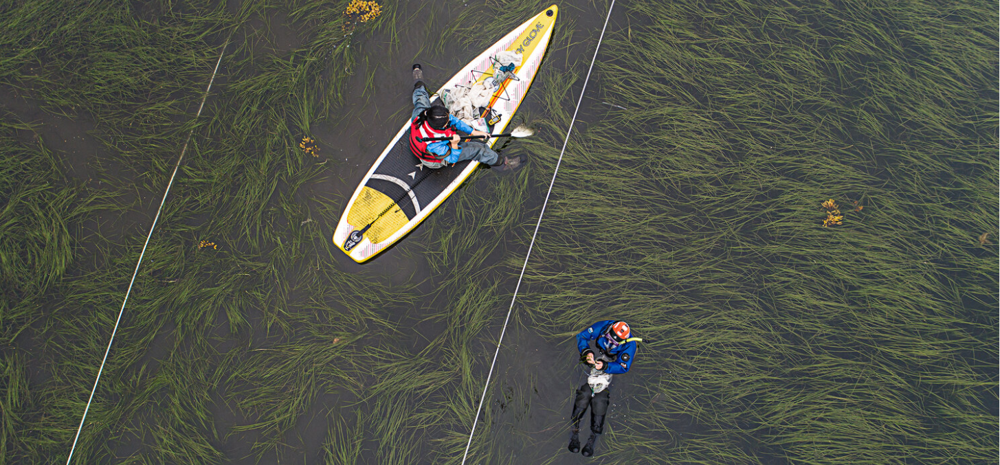
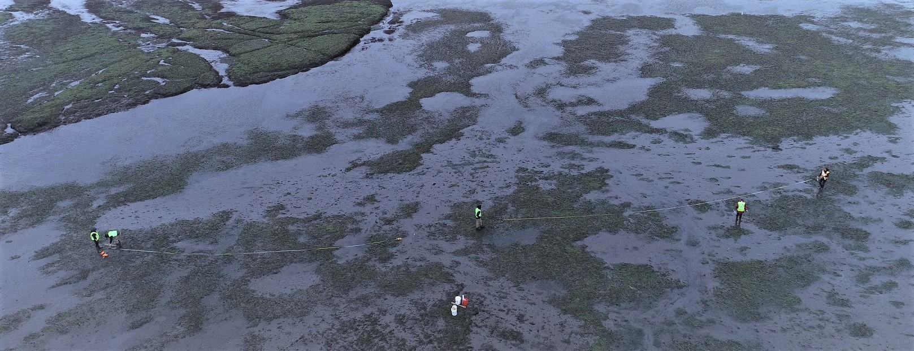
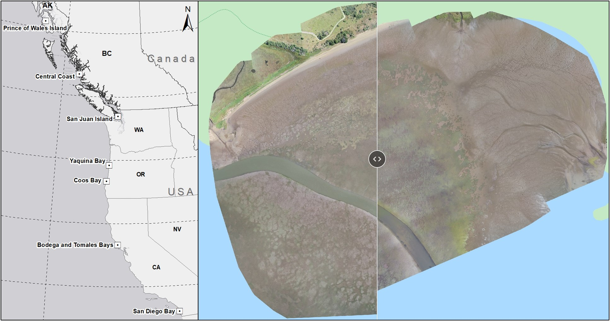
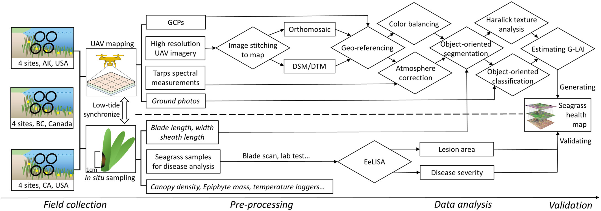

Seagrass meadows are quiet engines of coastal resilience—stabilizing shorelines, filtering water, nurturing marine life, and locking away blue carbon. At GeoFly Lab, we pair low-altitude UAV mapping with field ecology and AI-driven geospatial analysis to monitor these habitats with site-level detail and coast-wide coverage.

Seagrass habitats are a crucial part of the global carbon cycle, acting as significant carbon sinks that contribute to climate mitigation. Through photosynthesis, seagrasses absorb atmospheric CO₂ and convert it into organic matter, sequestering carbon in leaves, stems, roots, and underlying sediments. This both removes CO₂ from the atmosphere and facilitates long-term carbon storage within meadows, while also delivering co-benefits--habitat for diverse marine life, coastal protection, and nutrient cycling that bolster climate resilience.

Along the U.S. West Coast, eelgrass (Zostera marina) is the dominant species, often comprising 50–90% of seagrass cover 555. Yet eelgrass faces mounting pressure from wasting disease—primarily associated with Labyrinthula zosterae—which causes dark lesions, loss of greenness, and, in severe cases, plant mortality 6–96–96–9. Stressors such as warming waters, nutrient loading, and sedimentation can increase disease susceptibility, underscoring the need for rapid, spatially explicit monitoring to guide conservation and restoration.
Since 2019, our team and collaborators have built an unprecedented regional dataset spanning ~18° of latitude along the Pacific coast. We survey during summer low tides and integrate UAV imagery with on-the-ground measurements to assess eelgrass health and disease dynamics across:

Collectively, this program has captured 50,000+ high-resolution UAV images and videos, enabling consistent mapping of seagrass extent, condition, and change from Alaska to Southern California.
We fuse RGB and multispectral drone imagery with AI/computer vision to turn pixels into ecological insight:

This work is highly collaborative. Participating institutes and universities include Auburn University, Smithsonian MarineGEO, Cornell University, UC Davis, University of Alaska Fairbanks, Oregon State University, San Diego State University, and the Hakai Institute.
Key collaborators include Timothy Hawthorne (Auburn University), Carla Gomes (Cornell), Deanna Beatty (UCD), Drew Harvell (Cornell), Emmett Duffy (Smithsonian), Fiona Tomas Nash (OSU), Ginny Eckert (UAF), John Stachowicz (UCD), Kevin Hovel (SDSU), Leah Harper (Smithsonian), Lillian Aoki (Cornell), Lia Domke (UAF), Margot Hessing-Lewis (Hakai), Luba Reshitnyk (Hakai Institute), Ryan Mueller (Oregon State University), and Olivia Graham (Cornell).
Dive into our interactive ArcGIS Story Maps to explore survey locations, example mosaics, G-LAI layers, and disease-severity products, and to follow the project’s coast-wide progression over time: